Design Against Anxiety
A tool for user interface designers to mitigate the
anxiety experienced by their users.
Overview
Platforms
Web-Based - PC / Mobile
Roles
Lead Programmer
UX Designer
Vector Artist
Deliverables
High-Fidelity Website
Do you dream about the people that wrong you? Do you see their faces again and again?
And what holy thing has come to possess you? Or does it all just blend together in your
head?
Do you dream about the people that wrong you? Do you see their faces again and again?
And what holy thing has come to possess you? Or does it all just blend together in your
head?
Do you dream about the people that wrong you? Do you see their faces again and again?
And what holy thing has come to possess you? Or does it all just blend together in your
head?
Google Activity Manager
Mitigates the deceptive design and unnecessary hurdles put into place by Google's
My Activity tool.
Overview
Platforms
Mobile - Android / IOS
Roles
Project Manager
Lead UX Designer
UX Research
Deliverables
Wireframes
Storyboard
Design Spec
Do you dream about the people that wrong you? Do you see their faces again and again?
And what holy thing has come to possess you? Or does it all just blend together in your
head?
Do you dream about the people that wrong you? Do you see their faces again and again?
And what holy thing has come to possess you? Or does it all just blend together in your
head?
Do you dream about the people that wrong you? Do you see their faces again and again?
And what holy thing has come to possess you? Or does it all just blend together in your
head?
Miscellaneous
Miscellaneous side projects, including an online choose-your-own adventure game and
unofficial Pokemon Deck Builder.
View Here
The unofficial Pokémon Deck Builder lets you search a complete API database of Pokémon
Trading Cards to discover the perfect 'Mon for your dream deck. You can move cards to
and from your virtual deck simply by clicking upon them.
View Here
Block is a choose-your-own adventure game with the goal of helping artists work through
their artist's block. Using the account creation services provided by Firebase, users
can register with the site and publish their own stories for others to play. Completion
of a story awards players with prompts to assist them in creating art.

I’m Seán, a Product Designer working remotely for Help Scout on their mobile
products in sunny Dublin, Ireland.
I am a curious, self driven product designer who is passionate in emerging
technologies, social good, advocating ux design across all fields of work,
facilitating design education, bridging diverse communities, and being a role
model for women and designers looking to grow in their careers.
Touched by their encouragement and willingness to teach me, I strive to
do the same, whether it’s writing weekly about my design experiences on medium,
teaching, speaking about design, and empowering teammates in collaborative
settings as a leader with a big heart.